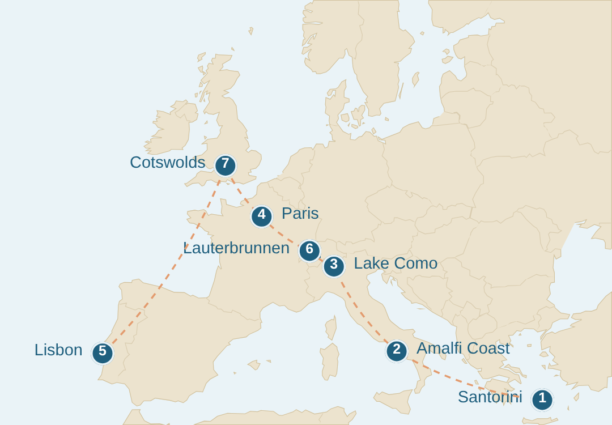

You're confirmed ☕
Seven European mornings worth crossing an ocean for — yours to keep.
Download the Map →Button not working? Open the Map here.

Explore the seven, and pick the one you'd plan first. In a day or two I'll ask you which one pulls you first — just so I send you the right mornings next. If you opted in, a new Slow Morning lands each week. That's the whole promise. No noise. — Eunice